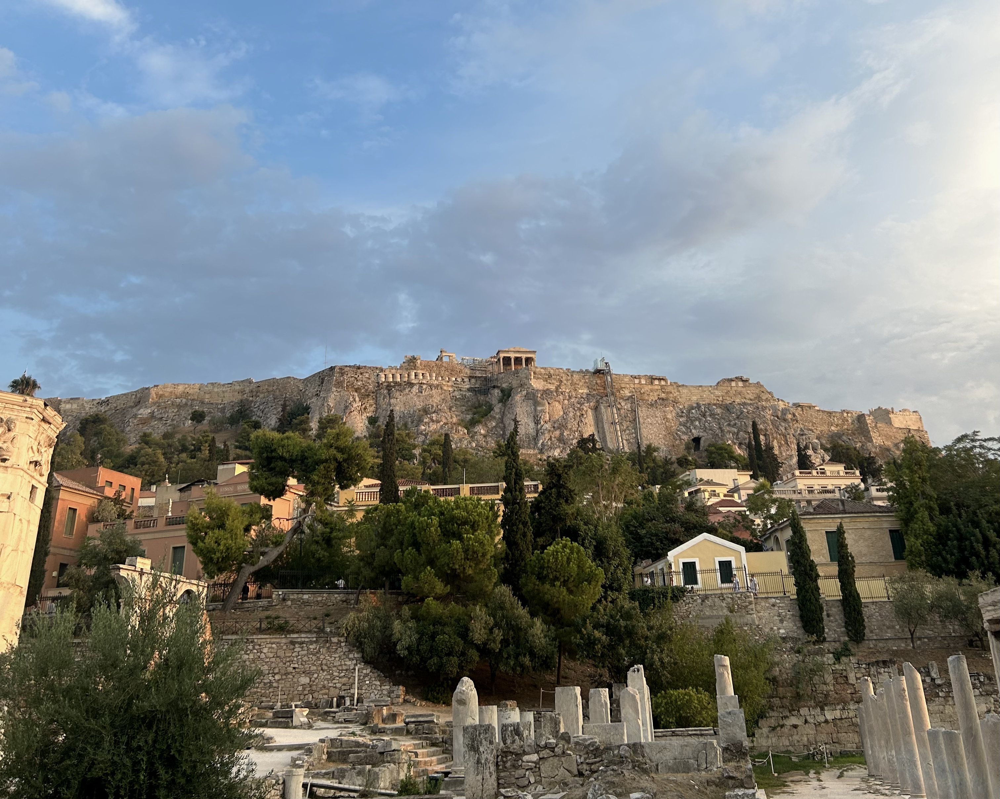
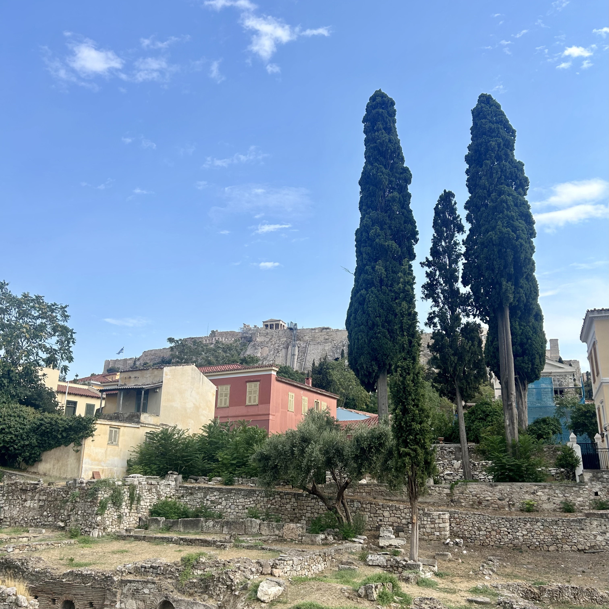
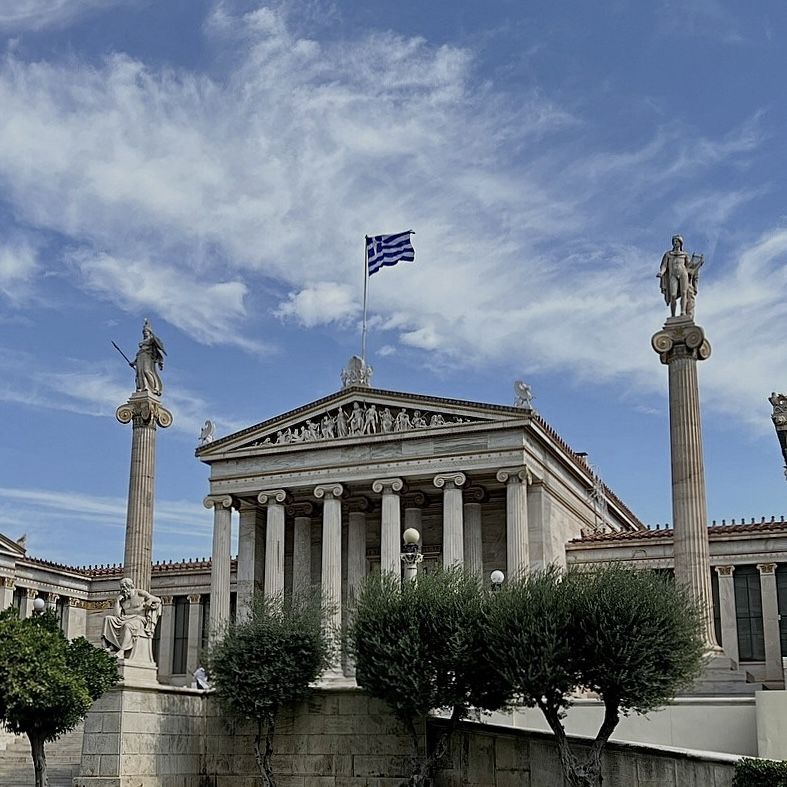
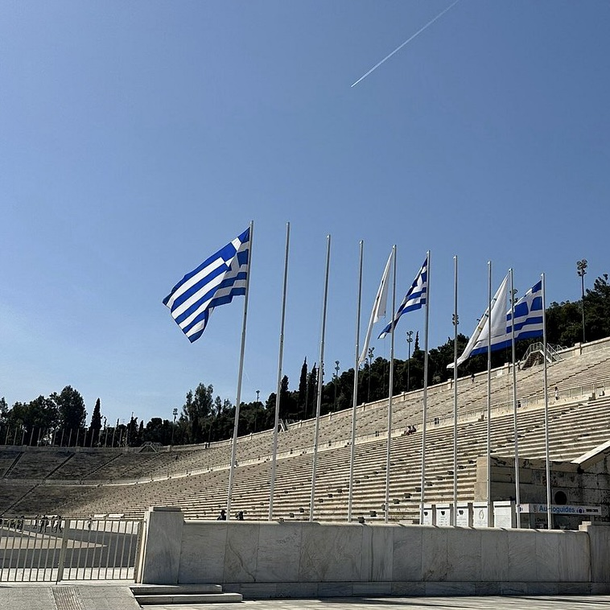
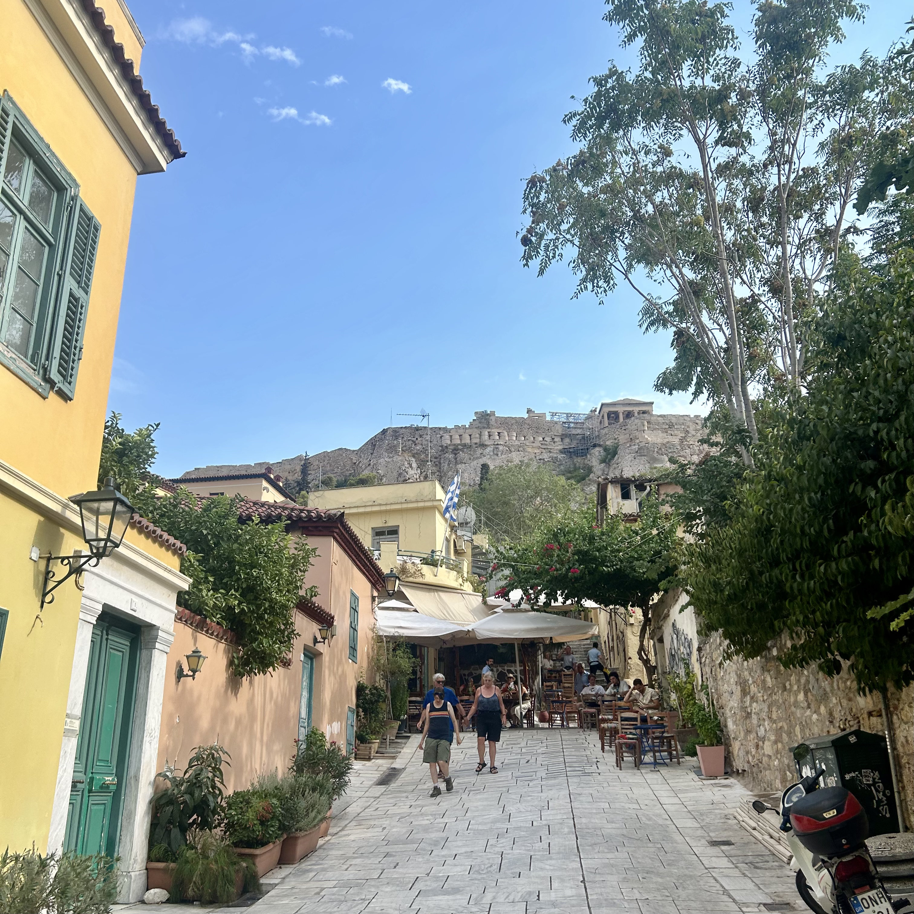

Greece Local Guide
EN /
FR /
GR


Explore the Iconic landmarks of Athens without going inside.

3-4 hours
Private Walking Tour
Panepistimio Metro Station




Explore the highlights of Athens on foot.
Embark on a walking tour that showcases the cultural, historical, and architectural gems of Athens. This route takes you through some of the most iconic landmarks and neighborhoods of the city, offering a unique perspective on its rich heritage.
Begin your journey at The Trilogy of Athens, a stunning ensemble of neoclassical buildings that includes the National Library, the University of Athens, and the Academy of Athens. These architectural masterpieces symbolize the intellectual and cultural achievements of modern Greece.
Continue to Parliament Square, home to the Hellenic Parliament and the Tomb of the Unknown Soldier. Witness the ceremonial changing of the guards performed by the Evzones, a tradition that honors Greece's history and heroes.
Next, visit the Zappeion Building, a grand structure surrounded by lush gardens, often used for exhibitions and events. This building holds historical significance as one of the first structures built specifically for the modern Olympic Games.
Proceed to the Panathenaic Stadium, the site of the first modern Olympic Games in 1896. This ancient stadium, made entirely of marble, is a testament to Athens' enduring connection to sports and culture.
Stroll through The Historic Neighborhood of Plaka, a charming area filled with narrow streets, traditional tavernas, and shops. Plaka offers a glimpse into the vibrant daily life of Athenians and is a perfect spot to experience local culture.
Conclude your tour at the Ancient Agora, the civic and commercial heart of ancient Athens. Explore the ruins of temples, stoas, and other structures that once served as the center of political and social life in the city.
Visit the National Library, the University of Athens, and the Academy of Athens, showcasing neoclassical architecture.
Witness the Hellenic Parliament and the ceremonial changing of the guards at the Tomb of the Unknown Soldier.
Explore this grand structure surrounded by lush gardens, often used for exhibitions and events.
Visit the site of the first modern Olympic Games in 1896, made entirely of marble.
Stroll through narrow streets, traditional tavernas, and shops to experience local culture.
Conclude your tour at the civic and commercial heart of ancient Athens, exploring ruins of temples and stoas.
Entrance fees to venues
Private licensed guide
If you have any questions or would like to book this tour, feel free to reach out:
Email: elisavetmakri@hotmail.com
Phone: +30 69429190805